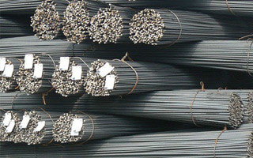

Rebar - Elkins Tri-Steel, LLC

Steel reinforcing bars, known as rebar, are most commonly used to provide structure and tension support in concrete structures. Rebar generally is priced per foot with slight price variations for thinner or thicker sticks.
The surface of the bar is "deformed" or patterned to provide a good contact area for concrete adherence. Early concrete structures did not use reinforcement bars, but rather broken pottery shards as reinforcement materials.
Steel reinforcement is generally divided into two types. Primary reinforcement is designed to support the overall load that construction is intended to carry, such as the rebar you might put into a concrete retaining wall. It holds the structure together. Secondary reinforcement is employed to maintain durability and aesthetics. It helps provide resistance to cracking and stress caused by temperature fluctuations and natural shrinkage of concrete as it dries.
Rebar is also used to hold other steel bars in position. This helps accommodate loads and stresses that couldn't be handled by rebar alone. Some rebar is used in an exposed condition. Rebar comes in a number of different grades. The grade tells you how many thousands of pounds per square inch the rebar can withstand. This is usually listed as "ksi." A grade of 60 ksi means that rebar can withstand 60,000 pounds per square inch of tension before it deforms.
When you become an Elkins Tri-Steel customer, you have immediate access to a full team of service experts who will assist you with your materials order, facilitation of desired services and on-time delivery of your product. We will manage the entire process, getting you the materials you need and providing you with whatever assistance you require along the way.
Our services related to sales, logistics, expediting and delivery of post tension materials are designed to ensure on-time delivery and your total satisfaction.
Contact us today for a no-obligation consultation or request a quote online!
Local Fort Worth Rebar & Post Tension Supplies:
The Most Professional & Reliable Post Tension and Rebar Fabrication Companies
Wherever you're located in Texas or beyond, trust your post tension and rebar fabrication needs to the experienced professionals at Elkins Tri-Steel, LLC. We feature top quality rebar supplies, attention to detail and an overall enjoyable experience for our customers. We are a family owned and operated company, highly skilled in all aspects of post tensioning and rebar fabrication.
Are you searching for "rebar supplier near me"?
Elkins Tri-Steel, LLC is your premier supply source for post tension and rebar fabrication, serving the needs of the greater Fort Worth area and beyond. We offer a wide array of products along with complete knowledge and expertise. Our experience and attention to detail set us apart from our competition.
Elkins Tri-Steel, LLC has earned a reputation for excellence. Our consistent outstanding customer service, unparalleled knowledge and post-tension supply expertise has made us a local leader. Our dedication to customer satisfaction has always been the key to our success. One call to our company, and you’ll see how our experience makes the difference between good work and excellent service.
We offer fabricated rebar, post tensioning, and fair rebar prices for the following areas of Texas:
Fort Worth Post Tension | Arlington Post Tension | Grapevine Post Tension | Lakeside Post Tension | Azle Post Tension | Springtown Post Tension | Saginaw Post Tension | Weatherford Post Tension | Hudson Oaks Post Tension | Benbrook Post Tension | Crowley Post Tension | Burleson Post Tension | Forest Hill Post Tension | Haltom City Post Tension | North Richland Hills Post Tension | Hurst Post Tension | Colleyville Post Tension | Keller Post Tension | Roanoke Post Tension | Aledo Post Tension | Bridgeport Post Tension | Rhome Post Tension | Boyd Post Tension | Mineral Wells Post Tension | Granbury Post Tension | Cleburne Post Tension | Mansfield Post Tension | Kennedale Post Tension | Bedford Post Tension | Celina Post Tension | All Surrounding Towns & Communities
If you are looking for a quality post tension company, please call 817-577-3588 or request a quote online.